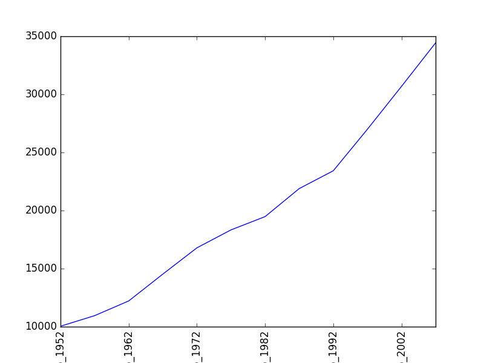
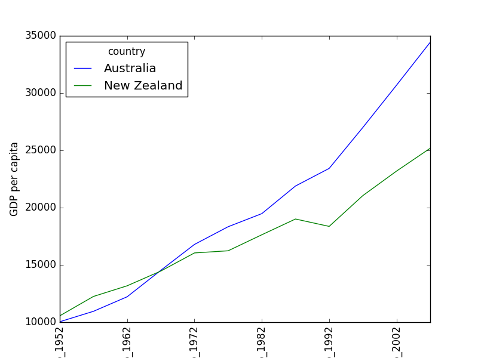
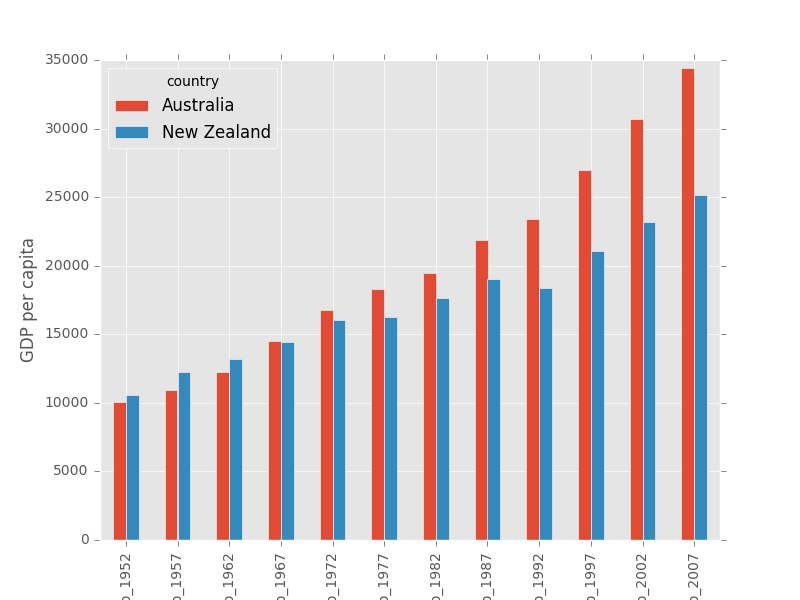
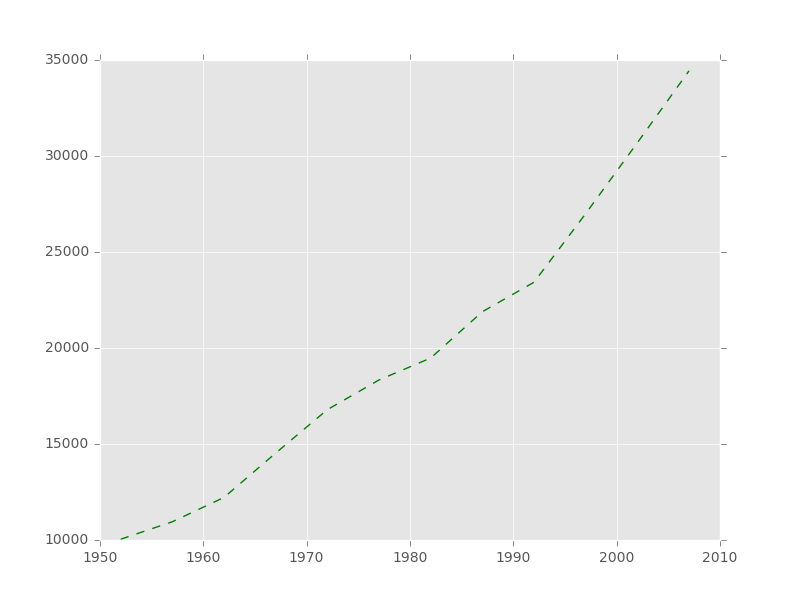
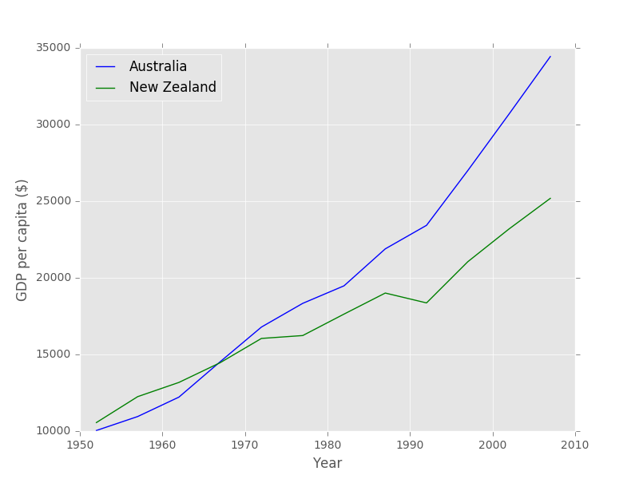
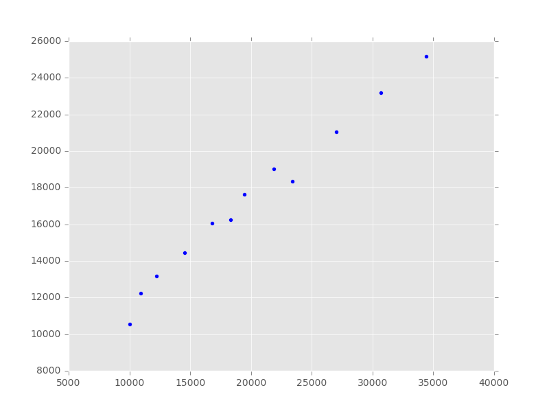
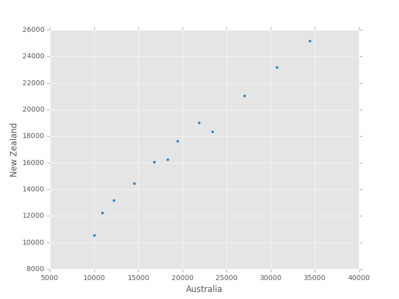
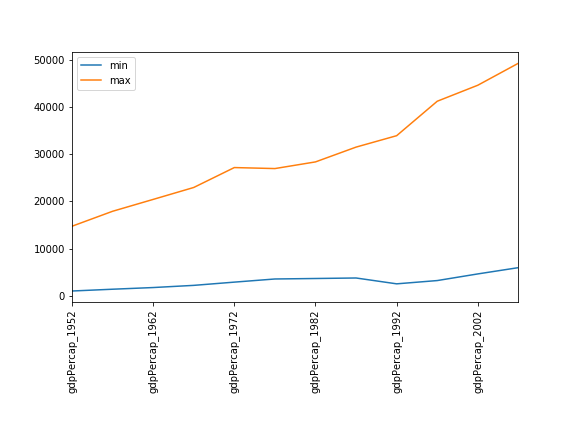
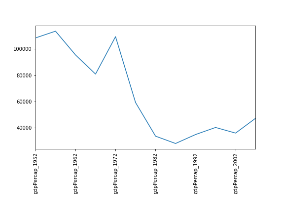

Plotting
Overview
Teaching: 15 min
Exercises: 15 minQuestions
How can I plot my data?
Objectives
Create a time series plot showing a single data set.
Create a scatter plot showing relationship between two data sets.
matplotlib is the most widely used scientific plotting library in Python.
- Commonly use a sub-library called
matplotlib.pyplot. - The Jupyter Notebook will render plots inline if we ask it to using a “magic” command.
%matplotlib inline
import matplotlib.pyplot as plt
- Simple plots are then (fairly) simple to create.
time = [0, 1, 2, 3]
position = [0, 100, 200, 300]
plt.plot(time, position)
plt.xlabel('Time (hr)')
plt.ylabel('Position (km)')

Plot data directly from a Pandas dataframe.
- We can also plot Pandas dataframes.
- This implicitly uses
matplotlib.pyplot.
import pandas
data = pandas.read_csv('data/gapminder_gdp_oceania.csv', index_col='country')
data.loc['Australia'].plot()
plt.xticks(rotation=90)

Select and transform data, then plot it.
- By default,
DataFrame.plotplots with the rows as the X axis. - We can transpose the data in order to plot multiple series.
data.T.plot()
plt.ylabel('GDP per capita')
plt.xticks(rotation=90)

Many styles of plot are available.
- For example, do a bar plot using a fancier style.
plt.style.use('ggplot')
data.T.plot(kind='bar')
plt.xticks(rotation=90)
plt.ylabel('GDP per capita')

- Extract years from the last four characters of the columns’ names.
- Store these in a list using the Accumulator pattern.
- Can also convert dataframe data to a list.
# Accumulator pattern to collect years (as character strings).
years = []
for col in data.columns:
year = col[-4:]
years.append(year)
# Australia data as list.
gdp_australia = data.loc['Australia'].tolist()
# Plot: 'g--' sets the line style.
plt.plot(years, gdp_australia, 'g--')

Can plot many sets of data together.
# Accumulator pattern to collect years (as character strings).
years = []
for col in data.columns:
year = col[-4:]
years.append(year)
# For loops is not introduced yet
# Instead of for loop we can use pandas dataframe functions to get the year.
years = data.columns.str.strip('gdpPercap_')
# Select two countries' worth of data.
gdp_australia = data.loc['Australia']
gdp_nz = data.loc['New Zealand']
# Plot with differently-colored markers.
plt.plot(years, gdp_australia, 'b-', label='Australia')
plt.plot(years, gdp_nz, 'g-', label='New Zealand')
# Create legend.
plt.legend(loc='upper left')
plt.xlabel('Year')
plt.ylabel('GDP per capita ($)')

- Plot a scatter plot correlating the GDP of Australia and New Zealand
- Use either
plt.scatterorDataFrame.plot.scatter
plt.scatter(gdp_australia, gdp_nz)

data.T.plot.scatter(x = 'Australia', y = 'New Zealand')

Minima and Maxima
Fill in the blanks below to plot the minimum GDP per capita over time for all the countries in Europe. Modify it again to plot the maximum GDP per capita over time for Europe.
data_europe = pandas.read_csv('data/gapminder_gdp_europe.csv', index_col='country') data_europe.____.plot(label='min') data_europe.____ plt.legend(loc='best') plt.xticks(rotation=90)Solution
data_europe = pandas.read_csv('data/gapminder_gdp_europe.csv', index_col='country') data_europe.min().plot(label='min') data_europe.max().plot(label='max') plt.legend(loc='best') plt.xticks(rotation=90)
Correlations
Modify the example in the notes to create a scatter plot showing the relationship between the minimum and maximum GDP per capita among the countries in Asia for each year in the data set. What relationship do you see (if any)?
data_asia = pandas.read_csv('data/gapminder_gdp_asia.csv', index_col='country') data_asia.describe().T.plot(kind='scatter', x='min', y='max')Solution
No particular correlations can be seen between the minimum and maximum gdp values year on year. It seems the fortunes of asian countries do not rise and fall together.
You might note that the variability in the maximum is much higher than that of the minimum. Take a look at the maximum and the max indexes:
data_asia = pandas.read_csv('data/gapminder_gdp_asia.csv', index_col='country') data_asia.max().plot() print(data_asia.idxmax()) print(data_asia.idxmin())Solution

Seems the variability in this value is due to a sharp drop after 1972. Some geopolitics at play perhaps? Given the dominance of oil producing countries, maybe the Brent crude index would make an interesting comparison? Whilst Myanmar consistently has the lowest gdp, the highest gdb nation has varied more notably.

More Correlations
This short program creates a plot showing the correlation between GDP and life expectancy for 2007, normalizing marker size by population:
data_all = pandas.read_csv('data/gapminder_all.csv', index_col='country') data_all.plot(kind='scatter', x='gdpPercap_2007', y='lifeExp_2007', s=data_all['pop_2007']/1e6)Using online help and other resources, explain what each argument to
plotdoes.Solution
A good place to look is the documentation for the plot function - help(data_all.plot).
kind - As seen already this determines the kind of plot to be drawn.
x and y - A column name or index that determines what data will be placed on the x and y axes of the plot
s - Details for this can be found in the documentation of plt.scatter. A single number or one value for each data point. Determines the size of the plotted points.

Key Points
matplotlibis the most widely used scientific plotting library in Python.Plot data directly from a Pandas dataframe.
Select and transform data, then plot it.
Many styles of plot are available.
Can plot many sets of data together.